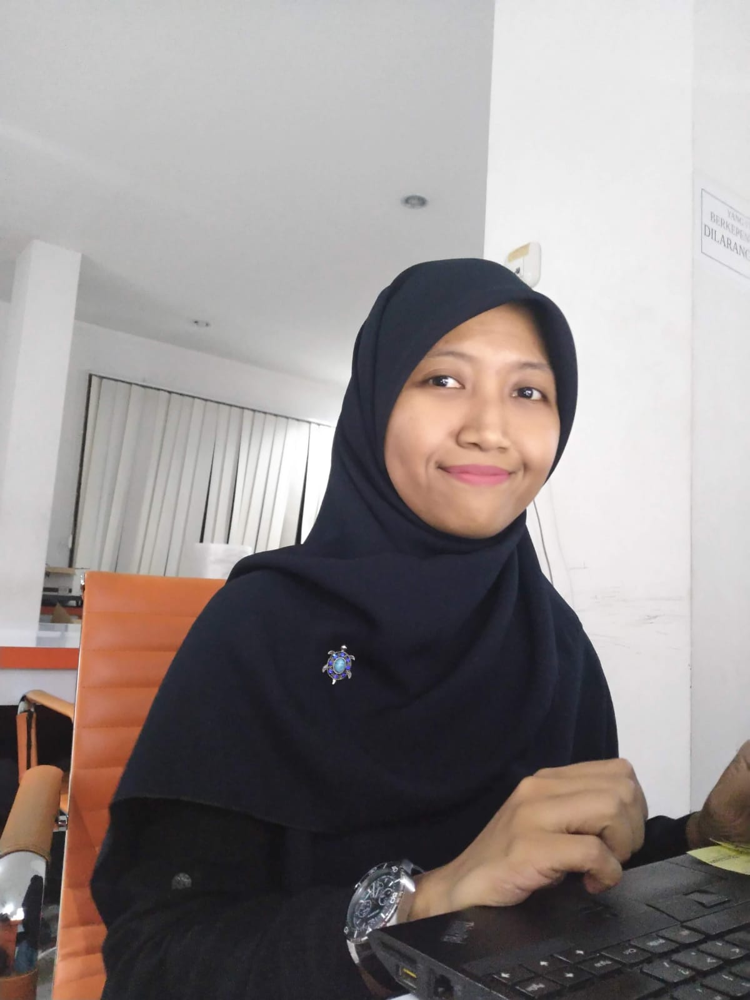

Rizki Mahmudah

Summary
Commitment in team work, ambitious, willingness to improve skills,
well organized, and able to work occasional odd hours. High
responsibility and reliability in every job assignment,
able to manage people and make a future plan. Experience in site and
office technical support, instructor, administration and documentation.
Able to develop effective relationships with new people.
I have experience also in a research group for few years.
I have willingness to move abroad.
Education
Education and Research Qualification
Skills
Computer and Non-technical skills
- Computer Skills
Microsoft Office and Open Office (Word, Excel, Power Point, Internet, Publisher, Visio),
Corel Draw, GIMP, Macromedia Fireworks, basic networking, basic linux.
- Soft Skills
Documentation, technical, training, management, analytical and problem solving skills.
- Technical Skills
- AWS (Automatic Weather Station) sensors and electrical system installation, civil works, and system monitoring
- MesoNetwork (Meteorological System Observation Network) civil works, electrical system installation, and system monitoring
- Lightning Detection civil works and system installation, system monitoring
- Upper Air Observation system installation (including electrical and radiolink installation)
- Electrical installation (basic)
Training and Certifications
- CIMEL - MesoNetwork System Maintenance & Operation (FT.01B.SMO)
Paris, France
- AWS (Automatic Weather Station) - AWS Site Training for Maintenance & Operator (01A.ST.OPER/MAINT)
Fakfak, Indonesia
- Upper Air - Upper Air Operation and Maintenance trainings (ST.04A5)
Cilacap, Indonesia
- Lightning Network - Lightning Detection Network Civil works, System Installation & Maintenance
Pelabuhan Ratu, Indonesia
Organizational Experience
- Secretary of Student Representative Organizations in Mathematics and Science faculty, University of Indonesia from 2009 - 2010
- Event coordinator in Open House of Physics Department, University of Indonesia, on 2009
- Public relation's deputy of Student Association in Physics Department, University of Indonesia from 2008 - 2009
- Vice chairman of The New Students Welcoming Ceremony in Physics Department, University of Indonesia, on 2007
Language
Work Experience
IS&N (IT) and Project Support - PT. Terrindo Bumi Raya
February 2021 - Present
- Technical, clients, and project support
- Monitoring system
- Create system monitoring report
Observation Engineer and Project Support - PT. Terrindo Bumi Raya
August 2018 - February 2021
- Sensors and system installation
- Technical, clients, and project support
- Monitoring system
- Create system monitoring report
- Document and inventory management
- Create tracking ticket for every mission
- Provide training system that has been installed for local people
- Create metadata for system that has been installed
- System maintenance
IT Support - Universitas Trilogi
January 2017 - July 2018
- Study the existing system and try to fix problems if there any
- Technical support
- Website content writer
- Database management
- System documentation
- Responsible for university online academic system
- Graduation certificate verifier
- Assist the academic division to conduct national reporting
Observation Engineer and Project Support - PT. Terrindo Bumi Raya
July 2013 - May 2016
- Sensors and system installation
- Technical, clients, and project support
- Monitoring system
- Create system monitoring report
- Document and inventory management
- Create tracking ticket for every mission
- Provide training system that has been installed for local people
- Create metadata for system that has been installed
- System maintenance
IT Admin - PT. Delameta Bilano
January 2013 - uly 2013
- Create data documentation from IT projects (engineer's works). The documentation will be used for the other engineer.
Coordinator Instructor - Universitas Indonesia (Advance Laboratory Physics)
September 2010 - November 2013
- Responsible for identify and analyze instrumentation tools
- Teach the students to do some experiments in advance physic's topics
- Arrange subjects and instructors schedule for each session
- Prepare subjects in each semester based on department request
- Prepare and conduct coordination and report meeting
- Responsible to instructors payroll
- Facilitator between instructors and students to lecturer
- Create reports for any activities that take place in the laboratory.
Other